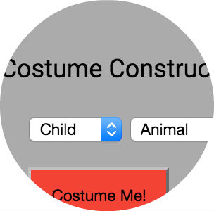

I am passionate about improving communication between engineers and clients. I make things go and achieve goals through a combination of technical skills, great energy and soft skills. I enjoy writing technical documentation and building out software from user stories and needs assessment, through wire framing, ERDs, and (prefer) an Agile SDLC. I am comfortable speaking to groups about projects and drumming up excitement to create new magic - be it a website or big art installation. Some have called me a technology unicorn, but the reality is I simply love to motivate teams to stretch their goals and unleash their creativity, because it is awesome to witness new things being done well.
I began my work life as a jet engine mechanic for the United States Navy. Upon completion of my tour, I earned a Master of Science in Information Studies, with an emphasis on UX/UI research. A fascination with how our culture will capture its stories as paper moved to digital was my motivator to become an archivist and maker of things. I've had the privilege to work in several different industries and adore finding opportunities to improve processes and implement new technologies wherever I go.

Costume Constructor
I built this simple single page app to help people narrow down costume ideas.
Technologies used: Mongoose, Express, AJAX, Node.js, MongoDB, HTML, CSS
Heroku deployment: arcane-caverns-39589.herokuapp.com
Github repo: costume-constructor
Garden Geek
A group project to create a garden tracking tool MVP. I acted as project manager, wrote documnetation, tested, debugged, and deployed the app.
Technologies used: Ruby on Rails, CSS, HTML
Heroku deployment: pacific-inlet-52173.herokuapp.com
Github repo: garden_app
Smartmobs - Analysis of pervasive technology (2003)
Don DeLillo: A Prelimenary Inventory - Finding aid created as DeLillo archivist.
Symantec AntiVirus Download and Installation Tutorial
bloggy rambles